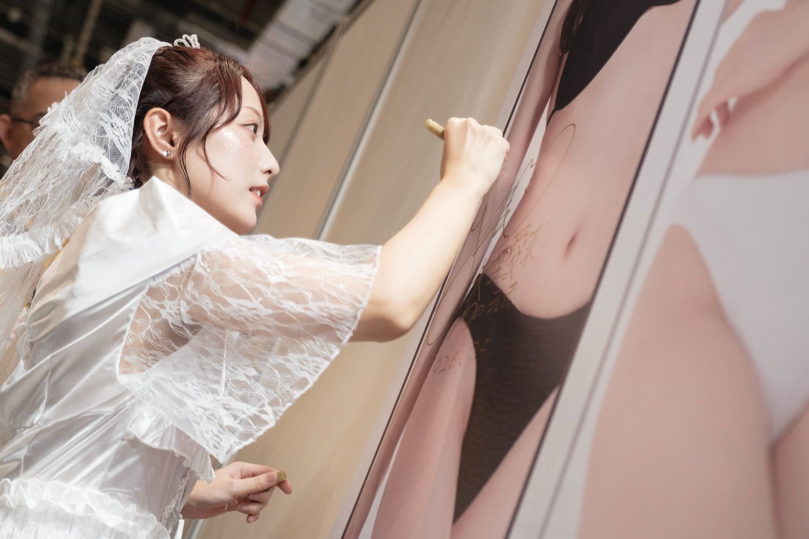
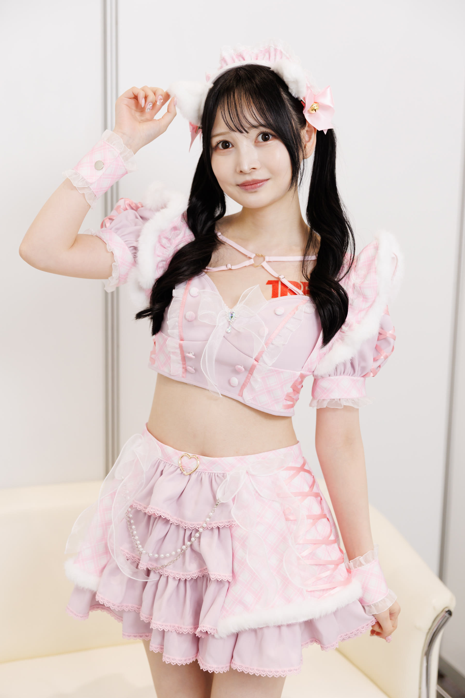

ARCHIVE · REAL DOCUMENT · SUMMER
SPECIAL VOL. · JULY 2026
三日間、七つの笑顔、
南港の盛夏。
さんにちかん・ななつのえがお・なんこうのなつ
●
EVENT COMPLETED
活動已圓滿結束
- Event
- 2026 TRE 台北國際成人展
- Dates
- 2026.07.03 — 07.05
- Venue
- 台北南港展覽館 2 館
- Booth
- A21 — A23
- Presented by
- 兔子洞 × 12the
THREE DAYS IN TAIPEI · 三日紀錄
七月的南港，快門、笑聲與近距離的問候，在 A21–23 攤位交疊成一段只屬於盛夏的記憶。
從初次來台的緊張，到鏡頭前逐漸放鬆的笑容；從精心準備的造型，到舞台與粉絲互動中意外誕生的小瞬間。這一頁不再為活動預告，而是把三日之間真正發生過的相遇，好好留存下來。
FEATURED GUESTS · 出演陣容
七位嘉賓，七種心動。
善場麻美 ASAMI ZENBA
井上桃 MOMO INOUE
花守夏步 KAHO HANAMORI
清宮仁愛 NIA KIYOMIYA
三葉千春 CHIHARU MITSUBA
跡美首里 SHURI ATOMI
矢埜愛茉 EMA YANO
SELECTED MOMENTS · 精選影像
被快門封存的，不只是造型。
精選自 7/3 與 7/5 現場紀錄；每張照片採用不同人物、姿態或互動情境，避免重複畫面。


OFFICIAL RECORDS · 社群紀錄
從預告到相遇，完整留存。
また会える日まで
「三天的相遇結束了，返回活動回顧 →
但那些笑容，仍留在每一次回望裡。」